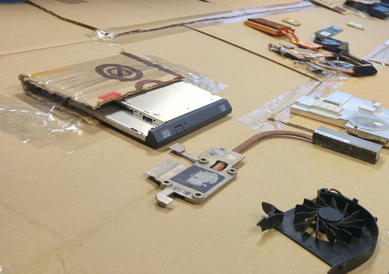
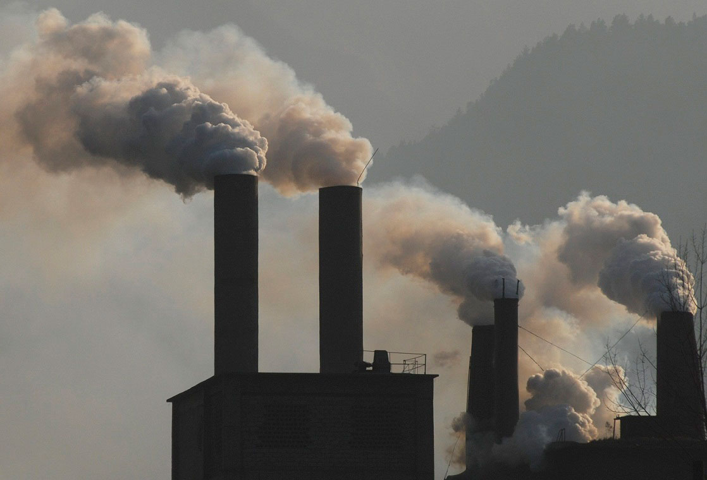
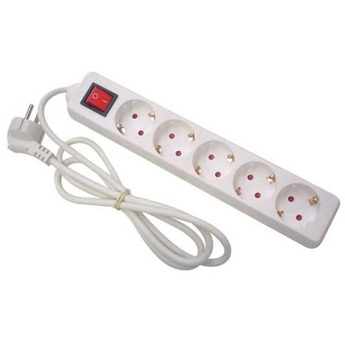

total de superficie ecológicamente productiva necesaria para producir los recursos consumidos por un ciudadano medio de una determinada comunidad humana, así como la necesaria para absorber los residuos que genera, independientemente de la localización de estas superficies.

¿Cómo la reducimos?
Lo importante es la utilización responsanble de los recursos que usamos diariamente.
Como el agua, la electricidad y la reutilización de los objetos en vez del desecho de estos.

Importancia de la Huella
La huella ecológica tiene una gran importancia porque nos indica la sostenibilidad de la Tierra.
Medidas
Necesidad de compromiso
Consejos
Ahorro de Energía
Situación Actual
Un gran problema
Gasto Energetico
Una realidad del dia a dia
Reduciendo la Huella
Tips
Monitor
Apaga el monitor si no vas a trabajar durante veinte minutos, la típica pausa del café a media mañana, por ejemplo.

Regleta
Conecta el monitor, la impresora y el resto de accesorios a una regleta de enchufes y apaga el botón cuando no los vayan a utilizar durante bastante tiempo. Si no usas regleta, directamente desenchúfalo. Si no lo haces, seguirás consumiendo electricidad.
Stand By
Evita el stand by. Al año, un ordenador en stand by consume 44 KWh y emite 28,5 Kg, según la Organización de Consumidores y Usarios.
tareas con el ordenador
También producimos CO2 con las tareas que realizamos en el ordenador.
Correo Electronico
-Conserva sólo los correos necesarios y elimina inmediatamente el correo spam.
-Multiplicar por 10 el número de destinatarios también multiplica por cuatro su impacto climático. Reduce el número de personas a las que envías un mismo correo a las estrictamente necesarios.
Correos
El tiempo de lectura de un mensaje determina cuánto CO2 emite. Envía documentos fáciles y rápidos de leer y optimiza su tamaño.
Motores de Búsqueda
Si en vez de usar un motor de búsqueda escribes directamente una dirección, divides entre cuatro las emisiones de gases de efecto invernadero. También si la pinchas desde “favoritos”.
Si no tienes más remedio que hacer una búsqueda, simplifícala todo lo que puedas y utiliza las palabras claves más precisas.
Consejos
Para aportar desde nuestro hogar.
La idea de usar la energía con eficiencia, es no gastar más energía de la necesaria.
A continuación, recomendaciones para hacer un uso más eficiente de la energía:
Iluminación
Aproveche la luz natural. Abra las cortinas y persianas durante el día en lugar de utilizar la iluminación artificial.
Limpie las bombillas y las lámparas. El polvo puede absorber 50% de la luz.
Apague las luces cuando no estén en uso, incluso por períodos cortos de tiempo.
Planee las zonas de iluminación. No todas las habitaciones necesitan la misma cantidad de luz. Planee según el uso de cada habitación para proporcionar la iluminación necesaria:intensidad de la iluminación, ubicación (iluminación de general vs iluminación de tareas complementarias (Ej. lámpara de escritorio)).
Electrodomésticos
Use el horno de microondas. Disminuye tiempos de cocido. Un horno microondas de eficiencia energética utiliza hasta 75% menos energía que un horno normal.
Use el el horno tostador, hornos de convección, ollas de cocimiento lento y ollas de presión. Estos aparatos usan menos energía y generan menos calor que un horno normal.
No deje que los ectrodomésticos o aparatos electronicos (computadora, monitor, impresora , cafetera) permanezcan encendidos durante todo el día, ya que desperdician mucha energía. Sólo enciéndalos cuando los necesite utilizar. Las computadoras y otros equipos de oficina usan energía aun cuando están en modo de reposo.
Refrigeradores y Congeladores
No sobrecarge la unidad. Los refrigeradores y congeladores operan con más eficiencia cuando estan llenos pero no cuando están sobrecargados.
Use sólo un refrigerador o congelador. Un segundo refrigerador o congelador puede aumentar $120 a los costos eléctricos anuales. Si desea usar un segundo refrigerador o congelador durante las vacaciones, enciéndalos uno o dos días antes de que lo necesite.
Cubra los alimentos. El compresor trabaja con más fuerza para enfriar aire húmedo. Al cubrir los alimentos se reduce la humedad causada por la evaporación, y también hará que el refrigerador huela mejor.
Lavavajillas
Cargue la unidad correctamente, de acuerdo a las instrucciones del fabricante, para aprovechar al máximo la acción del agua/limpieza del lavavajillas.
Lave cargas completas ya que utilizan la misma cantidad de energía y agua caliente que las cargas más pequeñas. Esto tambien hace que se ejecuten menos cargas y se ahorre más energía.
Seleccione el ciclo más corto que limpie bien sus platos. Ciclos más cortos utilizan menos agua caliente y menos energía.
Lavadoras y Secadoras
Lave cargas completas ya que utilizan la misma cantidad de energía que cargas más pequeñas. Esto hace a que se ejecuten menos cargas y se ahorre más energía.
No seque la ropa en exceso. El secar en exceso consume más energía de lo necesario, y arruina las telas. Cuando compre una secadora, asegúrese que tenga un censor electrónico que apague la secadora cuando la ropa está seca.
No sobrecargue la secadora, esto hace que la unidad trabaje más duro.
Limpie el filtro después de cada uso. Esto hace que la unidad funcione con eficiencia. (Revise periódicamente que la ventilación de aire y la manguera no estén obstruidas para prevenir el riesgo de incendio.)
Aire Acondicionado Central
Mantenga fuentes de calor (como lámparas y televisores) lejos del termostato. El calor de estos dispositivos pueden causar que el termostato mal interprete la temperatura del medioambiente. Causando un enfriamiento excesivo, y a la vez, desperdiciando energía.
Mantenga el condensador y el filtro limpio. Mantenga hojas, hierbas y otros desechos fuera del condensador exterior. También, limpie el filtro mensualmente o reemplácelo si es necesario. (El aire acondicionado central utiliza el mismo filtro que su sistema de calefacción.)
Enfríe sólo las habitaciones en uso. Cierre las puertas de las habitaciones que no se estén utilizando para mantener frescas las zonas donde más se necesita.
Calentamiento Global
La importancia de el reciclaje.
Calentamiento global y cambio climático se refieren al aumento observado en los últimos siglos de la temperatura del sistema climático de la Tierra y sus efectos.
Múltiples líneas de pruebas científicas demuestran que el sistema climático se está calentando. Aunque a menudo la prensa popular comunica el incremento de la temperatura atmosférica superficial como medición del calentamiento global, la mayor parte de la energía adicional almacenada en el sistema climático desde 1970 se ha usado en calentar los océanos. El resto ha fundido el hielo y calentado los continentes y la atmósfera. Muchos de los cambios observados desde la década de 1950 no tienen precedentes en décadas, aun milenios.
La comprensión científica del calentamiento global ha ido en aumento. En su quinto informe (AR5) el Grupo Intergubernamental de Expertos sobre el Cambio Climático (IPCC) señala que en 2014 los científicos estaban más del 95 % seguros de que la mayor parte del calentamiento global es causada por las crecientes concentraciones de gases de efecto invernadero (GEI) y otras actividades humanas (antropogénicas). Las proyecciones de modelos climáticos resumidos en el AR5 indicaron que durante el presente siglo la temperatura superficial global subirá probablemente 0,3 a 1,7 °C para su escenario de emisiones más bajas usando mitigación estricta y 2,6 a 4,8 °C para las mayores.Estas conclusiones han sido respaldadas por las academias nacionales de ciencia de los principales países industrializado y no son disputadas por ninguna organización científica de prestigio nacional o internacional.
El cambio climático futuro y los impactos asociados serán distintos en una región a otra alrededor del globo. Los efectos anticipados incluyen un aumento en las temperaturas globales, una subida en el nivel del mar, un cambio en los patrones de las precipitaciones y una expansión de los desiertos subtropicales. Se espera que el calentamiento sea mayor en la tierra que en los océanos y el más acentuado ocurra en el Ártico, con el continuo retroceso de los glaciares, el permafrost y la banquisa. Otros efectos probables incluyen fenómenos meteorológicos extremos más frecuentes, tales como olas de calor, sequías, lluvias torrenciales y fuertes nevadas; acidificación del océano y extinción de especies debido a regímenes de temperatura cambiantes. Entre sus impactos humanos significativos se incluye la amenaza a la seguridad alimentaria por la disminución del rendimiento de las cosechas y la pérdida de hábitat por inundación.
Las posibles respuestas al calentamiento global incluyen la mitigación mediante la reducción de las emisiones, la adaptación a sus efectos, la construcción de sistemas resilientes a sus impactos y una posible ingeniería climática futura. La mayoría de los países son parte de la Convención Marco de las Naciones Unidas sobre el Cambio Climático (CMNUCC), cuyo objetivo último es prevenir un cambio climático antropogénico peligroso. La CMNUCC ha adoptado una serie de políticas destinadas a reducir las emisiones de gases de efecto invernadero y ayudar en la adaptación al calentamiento global. Los miembros de la CMNUCC han acordado que se requieren grandes reducciones en las emisiones y que el calentamiento global futuro debe limitarse muy por debajo de 2,0 °C con respecto al nivel preindustrial con esfuerzos para limitarlo a 1,5 °C.
La reacción del público al calentamiento global y su preocupación a sus impactos también están aumentando. Un informe global de 2015 por Pew Research Center halló que una media de 54 % lo considera «un problema muy serio». Existen diferencias regionales significativas, con los estadounidenses y chinos (cuyas economías son responsables por las mayores emisiones anuales de CO2) entre los menos preocupados.
EL GASTO ENERGETICO
Una realidad del did a dia
Las reservas energéticas y el consumo de energía a nivel mundial son asuntos de la mayor importancia.
En este artículo se emplean las unidades, los prefijos y las magnitudes del Sistema Internacional como la Potencia en vatios o Watts(W) y Energía en julios (J), cara a comparar directamente el consumo y los recursos energéticos a nivel mundial. Un vatio es un julio partido por segundo.
El consumo energético mundial total en 2005 fue de 500 EJ (= 5 x 1020 J) (ó 138.900 TWh), considerando las distintas fuentes de energía, entre las que destaca el 86,5% correspondiente a la combustión de combustibles fósiles, aunque hay al menos un 10% de incertidumbre en estos Esto equivale a una potencia media de 15 TW (= 1.5 x 1013 W). No todas las economías mundiales rastrean sus consumos energéticos con el mismo rigor, y el contenido energético exacto del barril de petróleo o de la tonelada de carbón varía ampliamente con la calidad.
La mayor parte de los recursos energéticos mundiales provienen de la irradiación solar de la Tierra - alguna de esta energía ha sido almacenada en forma de energía fósil, otra parte de ella es utilizable en forma directa o indirecta como por ejemplo vía energía eólica, hidráulica o de las olas. El término constante solar es la cantidad de radiación electromagnética solar incidente por unidad de superficie, medida en la superficie exterior de la atmósfera terrestre, en un plano perpendicular a los rayos. La constante solar incluye a todos los tipos de radiación solar, no sólo a la luz visible. Mediciones de satélites la sitúan alrededor de 1366 vatios por metro cuadrado, aunque fluctúa un 6,9% a lo largo del año - desde los 1412 W/m² a principios de enero hasta los 1321 W/m² a principios de julio, dada la variación de la distancia desde el Sol, de una cuantas partes por mil diariamente. Para la Tierra al completo, con una sección transversal de 127.400.000 km², la potencia obtenida es de 1,740×1017 vatios, más o menos un 3,5%.
Las estimaciones de los recursos energéticos mundiales restantes son variables, con un total estimado de los recursos fósiles de unos 0,4 YJ (1 YJ = 1024J) y unos combustibles nucleares disponibles tales como el uranio que sobrepasan los 2,5 YJ. El rango de los combustibles fósiles se amplía hasta 0,6-3 YJ si las estimaciones de las reservas de hidratos de metano son exactas y si se consigue que su extracción sea técnicamente posible. Debido al Sol principalmente, el mundo tiene también acceso a una energía utilizable que excede los 120 PW (8.000 veces la total utilizada en 2004), o de 3,8 YJ/año, empequeñeciendo a todos los recursos no renovables.